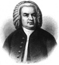

Meşhur bestekar Johann Sebastian Bach (1685-1750), Alman Barok döneminin en önemli sanatçılarından biridir. Batı müzik tarihinin en etkili eserleri arasında kabul edilen yüzlerce parça ve orkestra eseri yazmıştır.

Bach kontrapuntal müzik tekniğinin ustası olarak kabul edilmektedir. Bu teknikte iki ayrı müzik melodisi birlikte çalınmaktadır. Bach’ın karmaşık arajmanları kendi döneminde çok da popüler değildi. Ne var ki bu eserler Wolfgang Amadeus Mozart (1756–1791) ve Ludwig van Beethoven (1770–1827) gibi usta bestekarlara ilham kaynağı olmuştur.
Almanya’daki Eisenach şehrinde müzisyen bir ailede dünyaya geldi. Çocukluğundan itibaren org, violin ve çembalo dersleri aldı. Annesi ve babasının o henüz dokuz yaşındayken ölmesinin ardından ağabeyi Johann Christoph Bach tarafından büyütüldü. Ağabey Bach, org çalmadaki ustalığını ve mesleki bağlantılarını kardeşiyle paylaştı.
Bach ilk müzik başarısını bir koro üyesi ve orgcu olarak elde etti. Bundan ancak yıllar sonra bir bestekar olarak ün salacaktı. On yedi yaşından itibaren Almanya’da dolaşarak çeşitli prenslerin saraylarında org tasarlamaya ve çalmaya başladı.
1707 yılında evlenip yirmi çocuğundan ilkini kucakladıktan sonra, Weimar şehrinde saray orgçusu oldu. En bilinen fügleri Weimar döneminden kalmadır. Bu eserler, Das wohltemperierte Clavier adlı derlemede toplanmıştır. Aynı zamanda Weimar döneminde düğünlerde çalınan Jesu, Joy of Man’s Desiring (İsa: İnsan Tabiatının Neşe Kaynağı) adlı eseri de bestelemiştir. 1721 yılında bir Alman aristokratı için yazılan Brandenburg Konçertosu en önemli eserleri arasında kabul edilmektedir.
1723 yılında Leipzig’de müzik direktörlüğüne atandı. Şehrin Lutherci kiliseleri için beste yapmaktan sorumluydu. Zayıflayan görme gücünü düzeltmek için yapılan acemice bir operasyon sırasında altmış beş yaşında hayata veda etti.
Ek Bilgiler
1- Bach’ın, Maria Barbara Bach (1684–1720) ve Anna Magdalena Wilcke (1701–1760) adlı iki eşinden yirmi çocuğu oldu. Bunlardan sadece onu yaşadı.
2- Yaşadığı dönemde Bach’ın yalnızca bir resminin yapıldığı sanılmaktadır. Onun da gerçekliği tartışmalıdır. 1894 yılında kemikleri büstünün yapılması için bir heykeltıraşa verilmiştir. 2008 yılında bir antropolog aynı kemikleri kullanarak bilgisayar yardımıyla Bach’ın modelini çıkarmayı denemiştir. Ortaya çıkan modele göre Bach, kısa beyaz saçlı, nispeten şişman bir adamdı.
3- Bach’ın eserlerinin çoğu org ya da çembalo için yazılmıştır. Piyano, 18. yy’ın başlarına kadar keşfedilmemiştir. Bach 1730’larda bir piyano görmüş ama bu enstrümanın sesini sevmemiş ve asla çalmayı öğrenmemiştir.